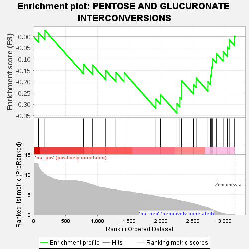
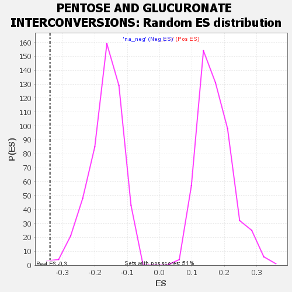

| | | Dataset | GSEA RNK clr Maaslin2 MucosalvsLuminal KO - Jejunum.rnk |
| Phenotype | NoPhenotypeAvailable |
| Upregulated in class | na_neg |
| GeneSet | PENTOSE AND GLUCURONATE INTERCONVERSIONS |
| Enrichment Score (ES) | -0.33924007 |
| Normalized Enrichment Score (NES) | -2.0182307 |
| Nominal p-value | 0.0020325202 |
| FDR q-value | 0.038070437 |
| FWER p-Value | 0.209 |
Table: GSEA Results Summary

Fig 1: Enrichment plot: PENTOSE AND GLUCURONATE INTERCONVERSIONS
Profile of the Running ES Score & Positions of GeneSet Members on the Rank Ordered List

Fig 2: PENTOSE AND GLUCURONATE INTERCONVERSIONS: Random ES distribution
Gene set null distribution of ES for PENTOSE AND GLUCURONATE INTERCONVERSIONS